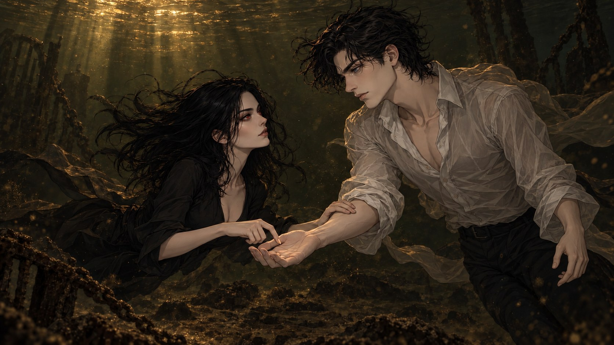

The Riverbed
London, 14 August 2002. Theo and Nell, at the bottom of the Thames.
He shrugged off the sodden weight of what was left of Viola's jacket and laid it over her bags. It would keep nothing dry. He set the shoes beside it, side by side. The shirt and trousers stayed on.
Then he turned his back to the Thames, the way she had, and stepped off the edge.
This time he went under on purpose.
It was dark down there, and muddy. The Thames wasn't the cleanest river in central London, and nobody could pretend it was. Nell had done this in places with considerably better views. She had scarcely done it in better company.
She found him by the way he moved the water, because neither her ears nor her eyes nor her nose gave him away. That was the point. For creatures with senses so keen, having them cut off was like switching off every dial that rang all day, every day, without a break. Not even sleep could do that for them, because they didn't sleep.
She swam to him and then moved her legs slowly, keeping just above the bottom, level with his eyes for the first time. She touched his arm to keep from drifting and looked at his face, visible only from this close. Her hands moved quickly, making a few signs. Then she put her hand back on his arm and waited for an answer.
He felt her before he saw her: a slow push in the water that wasn't the river's. Then a hand on his arm, and her face, close enough at last to make out in the brown dark. Level with his, for once. Her hair moved around it like weed. Her eyes were the only colour down here.
Her hands came up between them and moved.
Quick. Precise. Shaped. Not gesture. These were words, he could see that much: a grammar, a whole language built for exactly this, for being somewhere nobody could hear you, or somewhere you didn't want to be heard.
Even the Malice had nothing to say. He was watching her hands.
Theo didn't know a word of it.
Her hand went back to his arm, and she waited.
He could have shaken his head. He could have pointed up at the surface, where there was air to talk in and every ear in London to hear it.
He didn't want to go up.
So he took the hand on his arm, carefully, and turned it palm up between them. With one fingertip, slowly enough that she'd feel every stroke, he wrote on it.
T. E. A. C. H.
A pause, while the current leaned on them both.
M. E.
Nell let him take her hand without a second thought and watched her own open palm as he drew the letters there. His touch was gentle, as cold as the water around them, but it was the only thing she could feel, and she felt it in every nerve.
She looked up at him and nodded, smiling. They had plenty of time before sunrise, and she was in no hurry to go back up either. She took his hand and drew the first shape.
A: the index finger of her right hand to the thumb of her left.
B: two circles, one on each hand, fingertips touching.
C: one hand only, the other still on his palm, thumb and finger curved like a claw.
D: that same claw against the straight index finger of the other hand.
Then she looked at him, and waited for him to repeat them.
Her hand was as cold as his. Down here, that made it the warmest thing in the river.
He watched her make each shape the way he watched anything he meant to keep. Then he did them back, slowly at first. The cold didn't make his fingers any clumsier, but he had never asked them to do this before, and they felt every inch of the water they moved through. A. B. C. D. He held each one a moment longer than she had, the way you'd hold a word in a new language to make sure you'd said it right. Her face, this close, told him nothing was wrong.
Four letters. He turned them over. Not much of an alphabet. You could make cab out of it, or bad, or add.
Or one other.
He didn't decide to. His hands did it while he was still thinking it: the curve against the straight finger, a fingertip to a thumb, the curve again.
D. A. D.
He hadn't used that word yet. Not aloud, not even in his own head in so many letters. He'd said I'm in, which was a different thing.
Down here, where nobody could hear anything, it turned out he could say it.
His hands hung in the water in front of him, the last curve still in them. He looked at them for a moment, as if they'd done something without asking him first. Then he looked back at her.
She had been certain he'd go for bad. It would have made sense, with the Big Guy inside him, and the way he saw himself, and everything being a vampire was about. Her eyes went wide when the word turned out to be dad. Then she nodded and smiled. It was good that he wanted to practise straight away. She made him repeat the letters once more, and gave him another four.
E: her right index finger against her left.
F: the first two fingers of each hand, laid across each other.
G: both hands in fists, the right one lowered onto the left, hard enough that the water moved a little faster around them.
H: both palms flat, the right drawn across the left, out towards the fingertips.
Then she waited again.
He did them back. E was easy, a sibling of A. F. G, and the push of the water against his knuckles as the fists met. H—
Backwards, the Malice said.
It was the first thing He'd said since the steps. Theo's hand stopped halfway across his palm.
Towards the fingertips. She showed you. You went the other way.
Of course He'd been watching. He'd been watching her hands since the first word, the way He watched anything quick, and apparently He'd been paying better attention than Theo had.
Theo did the H again. Flat palm across flat palm, out towards the tips this time, slow and deliberate, like a man correcting his own handwriting with somebody reading over his shoulder.
Then he looked at her, perfectly straight-faced, as if the first one had never happened.
Nell had seen the wrong direction, and her hand was already rising to fix it when he fixed it himself. She smiled wider and nodded again. She couldn't have known he'd had help from the inside. She filed him under good student, and signed something to check.
Curve against a straight finger. Fingertip to fingertip. Fingertip to thumb. The curve again.
He read it all at once, the way he'd read a word chalked on a wall, and the corner of his mouth went before he could stop it.
D. E. A. D.
Accurate, said the Malice.
Of course that was the test. Of all the words eight letters could make, she'd picked the one that described them both: two bodies at the bottom of a river with nothing in their lungs. He nodded once, so she'd know he'd got it.
Then he answered.
D. E. A. D. Two fingers laid flat against his own chest, over the place where nothing moved.
D. A. D. The same two fingers. The same place.
He held her eyes and let the two words stand there together.
Her eyes narrowed and her brows drew together on the second word. She pointed a finger at him and raised her eyebrows, because he didn't have the letters yet that she'd need to ask it properly.
You?
So she went on with the lesson instead, and he let her.
I: a fingertip to the middle finger.
J: the same start, then a long hook drawn down the palm to the thumb, twice, so he'd see the shape of it.
K: the left index finger straight, the folded knuckle of the right set against it.
L: a fingertip laid across the flat of a palm.
He did them back, his fingers slow with care. I. J, the hook drawn once, the way she'd drawn it. K. L.
Twelve letters. He turned them over the way he had the first four, and what he needed was there almost at once.
C. H. I. L. D.
Then he pointed: up through the black water and west, upriver, to where Notting Hill would be if the Thames had windows. A house there. Two people waiting up for him, or pretending not to.
The same two fingers came back and pressed flat to his own chest.
He held them there a moment. Then he nodded, once, to answer the question she'd asked with one finger.
Her expression soured. Something dark and painful crossed her face, and her right hand moved, just slightly, towards her own body. Towards the scar.
The Malice went quiet. Theo was starting to count the times.
She pointed at him, spelled D. A. D., and shook her head. Either the child was his, or it wasn't. In her world, that was how things looked. She could grasp the rough shape of Theo being with two people at once. Paternity and blood didn't care about arrangements.
She went on with the lesson, a little unsettled.
M: three fingers of her right hand laid on her left palm.
N: the same, with two.
O: her index finger to the ring finger of her left hand.
P: the ring from B, made with her right hand, set on the tip of her straight left index finger.
He did the new letters first, the way she wanted them, each right the first time, slow against the drag of the water. He'd put something on her face he hadn't meant to. He didn't know what, and he wasn't going to ask. But she had made an argument, and Theo had never in his life let one go past him unanswered.
B. L. O. O. D.
He shook his head, slowly, the way she had.
He'd had a father who shared every drop of his blood. It had never once made Cassius Nott a dad.
M. I. N. E.
He didn't push it further than that. He let his hands go still between them, and waited for the next letter.
Nell's lips pursed as she watched him make his argument. She wasn't going to argue with it. It was none of her business, and she hadn't survived this long by refusing to weigh an argument before she rejected it.
She made her own instead.
H. U. M. A. N.
Then, more hesitantly, as if going there wasn't easy for her:
D. I. E.
He hadn't been taught the U. He didn't need it; it was only the next fingertip along, and the word was plain enough without it.
He didn't move. His hand stayed where it was, open between them.
She wasn't telling him anything new. He'd done that arithmetic the first night he woke and every night since, and it always came out the same. Jackie would die. Draco would die. Whatever child they had would grow up, and grow old, and die too, and he would still be here, the age he was tonight, with a river's worth of years in front of him.
He'd known it when he said I'm in. He'd said it anyway.
She took his palm before he could answer, and gave him four more.
Q: a ring with her left hand, her right index finger hooked under it.
R: her left palm flat, a hooked right finger set in the middle of it.
S: the little fingers of both hands, hooked together.
T: her index finger to the heel of her open left palm.
He did them back, all four, carefully, the water dragging a little at the hook of his finger. Then he answered her, with what he had.
I. K. N. O—
And ran out of alphabet.
He looked at his own hand, at the gap where the next letter should have gone. Then he held it out to her, palm up, the way he'd turned hers at the start. Go on, then.
She showed him W next, since the order only mattered to schoolchildren: the fingers of both hands laced together, and held.
He took that one before she'd shown him the rest. Laced his own fingers, once, deliberately, and looked at her over them.
W. The end of the word he'd left hanging.
She went through the others, and he took those too. V: two fingers parted on a palm. X: two index fingers crossed. Y: an L made with the left hand, a fingertip set into its angle. Z: a bent hand against an upright one.
Twenty-six. The whole thing, in the cold and the silt at the bottom of the Thames, between one part of the night and the next.
Then she signed, visibly straining to slow her hands enough for him to follow, and he watched every letter.
S. I. R. E. I. S.
She stopped for a moment, as if choosing the next word.
F. O. R. V. A. M. P. S.
Not a human child. Not something fragile and alive and always moving, like the hundreds of humans she'd lifted pocket trash from and deciphered from a safe distance. A bond that would last for centuries, the way she would, and he would. There was something else, too, something she wasn't ready to share with him yet. She didn't want to turn it into just another part of an argument.
He understood what she was offering him. Not a child. A childe. Something that wouldn't break. Something that would still be there in three hundred years, the way the two of them would.
He thought about waking up in a body that didn't breathe, with someone else's blood in it, and nobody having asked him whether he wanted any of it.
N. O. B. O. D. Y. A. S. K. E. D. M. E.
He let his hands go still, and didn't look away from her.
She knew. Half the court had been gossiping about it. And she remembered her own waking: the hunger, the rage, the emptiness where life was supposed to be.
M. E. N. E. I. T. H. E. R.
Then, because that wasn't the whole truth about her turning, and she didn't want him imagining something that wasn't there:
B. U. T. I. M. G. R. A. T. E. F. U. L.
That, he hadn't guessed.
She smiled at him, as if to encourage him, and went on, a little faster with every sentence. He had to work to keep up, his eyes fixed on her fingers. He lost a letter here and there in the dark water and caught the words anyway.
I would be dead.
There is only one thing worse than death.
Being a vampire is not it.
She didn't say what the one thing was. He noticed that, and put it with the scar, and with her hand moving towards it, and with every time tonight the Malice had gone quiet.
You know what she means, he said.
The Malice didn't answer for a long moment. Then: Leave it.
Not a threat. Theo had heard all of His threats. This was something else, and he didn't have a word for it.
So he left it, and answered the part he could.
Grateful. He turned the word over. A year ago tonight he had woken up dead, and he'd spent most of the year since being something he managed. Then, an hour ago, he had laughed out loud in the middle of the Thames. He hadn't known he still could.
M. E. T. O. O.
A beat. Then, because it wasn't true of the whole year, and she had been honest with him:
T. O. N. I. G. H. T.
Her face lit up by degrees with each letter of tonight.
He saw it coming the way you see weather coming: her hands on his arms, her face rising to his, close and then closer, and the whole river holding still around them. For one fleeting second it looked as if she meant to kiss him.
He didn't move. Not towards her. Not away.
The Malice did. Not with the body; Theo kept that. With everything else: a lean, a quickening, the whole of Him gone forward against the lead.
Then she ruffled his hair.
Of all the things he'd braced for, being tousled like a schoolboy at the bottom of the Thames hadn't been one. By the time he'd understood it, she had pushed off his shoulders and was gone, a pale shape kicking upwards through the brown, and the water was still moving where her fingers had been.
Pity, said the Malice.
No, said Theo, and went after her.
She was out of the water in a few heartbeats, shaking her hair like a wet dog and pulling her clothes on over her wet skin. He came up the steps a few seconds behind her and stood there streaming onto the stone.
"You're a fast learner," she said, without turning round. "You'll grow into a proper vamp yet. Practise the signs, too. At court, it's the only way you can be sure a conversation stays private."